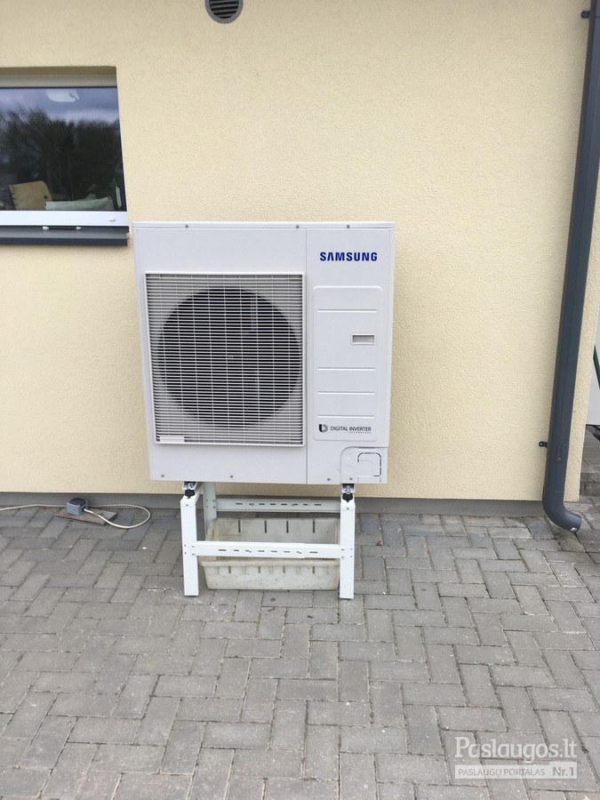

Rekuperatoriai | Šilumos atgavimo įrenginiai | sauguspasaulis.lt
- Rekuperatoriai, kaina | rekuperatoriucentras.lt
Rekuperatoriai ir minirekuperatoriai (275) Akcijos ir naujienos; Rekuperatoriai (96) Mini rekuperatoriai (18) Geoterminiai šilumokaičiai rekuperatoriai; Rekuperatorius + šilumos siurblys „oras-oras“ (3) Lanksčių ortakių sistemos (82) Priedai (55) Plyšiniai difuzoriai (10) Difuzoriai (7) Įleidžiami, priglaistomi difuzoriai (4) - Rekuperatoriai, rekuperacinės sistemos | namams24.lt
Rekuperatoriai butams gali būti įrengiami pasirinkus iš plataus modelių sąrašo. Pagrindinis buto pertvarkymas būtų tas, kad reikėtų plano, kaip kuo geriau pravesti ortakius. Geri meistrai pasirūpins, kad nuo to nenukentėtų Jūsų buto lubų aukštis. Taip pat Jūs visada galite rinktis ir sieninius rekuperatorius. - Rekuperatoriai | Mini Rekuperatoriai | Gedarta.lt
Rekuperatoriai – tai šilumokaičiai, kuriuose iš kambario išeinantis šildomas oras didžiąją dalį šilumos atiduoda šaltam orui, patenkančiam iš lauko. Tai yra, – išeinantis oras šildo įeinantį. Žiema prisimename šiltas vasaros dienas ir laukiame, kol grįš šiluma. Tačiau mes negalime laukti gamtos malonumų, todėl ... - Rekuperatoriai butui | sildymas-vedinimas.lt
Rekuperatoriai namams, butams ir komercinių patalpų vėdinimui. Rekuperatoriai su rotaciniais, plokšteliniais šilumokaičiais. Įrenginių našumas nuo 50 iki 25 000 m3/h. Mūsų kataloge esantys rekuperatoriai gali ne tik vėdinti bet ir šildyti patalpas (žr. konkretų modelį). - Rekuperatoriai | Orokondicionieriai.pro
Rekuperatoriai – pagrindiniai prietaisai, kurie yra skirti užtikrinti tinkamą vėdinimą ir šilumos išlaikymą. Konsultuokitės tel. +370 670 26670 - Rekuperatoriai | Vilpra.lt: Šiluma Jūsų namams
Domina rekuperatoriai, vėdinimo, kondicionavimo ir šildymo sistemos bei montavimo paslaugos gera kaina? Mes galime padėti! Susisiekite tel. +370 (693) - Rekuperatoriai | Šilumos atgavimo įrenginiai ...
Efektyviai veikiantys mini rekuperatoriai privatiems ir verslo objektams. Skirtingos charakteristikos rekuperacinė įranga, geriausios kainos garantija. - Rekuperatoriai | Šilumos siurblių ir vėdinimo sistemų ...
Rekuperatoriai + Užklausti + Titon Rekuperatorius + Atrea Rekuperatorius + Itho Rekuperatorius + Brofer Rekuperatorius + Brink Rekuperatorius. Siekiame, kad kiekvienas klientas būtų patenkintas atliktų darbų kokybė ... - Beortakiniai rekuperatoriai - HomeAir
Brofer firmos rekuperatoriai pasižymi aukštu šilumos grąžos efektyvumu – iki 90%, energijos efektyvumo klasė A. Šios firmos produktų serijoje rasite ne tik begalo platų asortimentą, bet ir prekes, kurios stebins inovatyviais inžineriniais sprendimais bei savo kokybe.Rekuperatorių galingumas vyrauja nuo 160 m 3 /h iki 470 m 3 /h ... - Rekuperatoriai | Oris.lt - Šildymas, Šaldymas, Vėdinimas
Rekuperatoriai - šiuolaikiškas ir praktiškas sprendimas, reikalaujantis nedidelių investicijų ir tuo pačiu padeda taupyti. Jų sistemos yra yra kelių rūšių.

Siekdami pagerinti jūsų naršymo kokybę, statistiniais ir analitiniais tikslais šioje svetainėje naudojame slapukus (ang. „cookies ). Juos bet kada galėsite atšaukti pakeisdami savo interneto naršyklės nustatymus ir ištrindami įrašytus slapukus. Supratau Rasime tinkamiausią sprendimą. Susisiekite. I-V: 09:00 - 18:00 val. 0.00 € Lietuvių Prekių katalogas Paieška Paslaugos Specialūs pasiūlymai Prietaisų nuoma Naujienos Apie mus Kontaktai Titulinis Prekių katalogas
Rekuperatoriai
Rekuperacinės vėdinimo sistemos namams, biurams, kitoms komercinėms patalpoms Rekuperatoriai namams, butams ir komercinių patalpų vėdinimui. Rekuperatoriai su rotaciniais, plokšteliniais šilumokaičiais. Įrenginių našumas nuo 50 iki 25 000 m3/h. Mūsų kataloge esantys rekuperatoriai gali ne tik vėdinti bet ir šildyti patalpas (žr. konkretų modelį). Galime pasiūlyti platų kokybiškos įrangos pasirinkimą - nuo bazinių modelių iki sudėtingesnių modifikacijų.Taip pat parduodame visą reikiamą komplektuojamą įrangą ir priedus. Atliekame rekuperatorių, vėdinimo sistemų montavimą, aptarnavimą ir remontą.
Jei nesate tikri, kokie rekuperatoriai jums geriausiai tiktų – susisiekite su mumis. Supažindinsime su turimais modeliais ir jų skirtumais, patarsime, ką geriausia pasirinkti. Aidas Bukauskas Rekuperatoriai, vėdinimo sistemos +37060463777 aidas@sauguspasaulis.lt Palubiniai vėdinimo agregatai su šilumos rekuperacija Daikin VAM-FC/J Šios serijos rekuperatorius - idealus sprendimas parduotuvėms, restoranams, biurams ar kitoms komercinėms patalpoms. Platus modelių pasirinkimas, todėl galima rasti tinkamiausią vėdinimo įrangą patalpoms. Rekuperatoriai su oro srautu nuo 150 iki 2000 m³/h. Rekuperatorius gali būti naudojamas kaip individualus įrenginys arba kaip bendros vėdinimo sistemos dalis. Teirautis dėl kainos Plokštelinis rekuperatorius Electrolux EPVS-1100 Puikiomis darbinėmis savybėmis pasižymintis plokštelinis Electrolux rekuperatorius su valdymo pultu. Išmani sistema saugo rekuperatorių nuo apšalimo, kontroliuoja filtro užterštumą, leidžia programuoti darbo režimus. Be elektros šildytuvo veikia iki -10 °C lauko oro temperatūros. Teirautis dėl kainos Plokštelinis rekuperatorius Electrolux EPVS-1300 Po pakabinamomis lubomis montuojamas plokštelinis rekuperatorius. Su valdymo pultu. Tinka A++ energetinės klasės pastatams. Veikia iki -10 °C lauko temperatūros be papildomo šildytuvo. Integruota automatikos sistema apsaugo nuo apšalimo, kontroliuoja filtro užterštumą, leidžia programuoti įrenginio darbo režimą savaitei. Teirautis dėl kainos Plokštelinis rekuperatorius Electrolux EPVS-200 A+ energijos klasės, kompaktiško dydžio palubinis Electrolux rekuperatorius išsiskiriantis efektyviu energijos sąnaudų naudojimu. Dėka konstrukcinių savybių lengvai montuojamas. Integruota automatikos sistema apsaugo rekuperatorių nuo apšalimo, kontroliuoja filtro užterštumą, leidžia programuoti įrenginio darbo režimą savaitei. Rekuperatorius tinka A+ energetinio naudingumo klasės pastatams. Teirautis dėl kainos Plokštelinis rekuperatorius Electrolux EPVS-350 Plokštelinis rekuperatorius su valdymo pultu. Pasižymi puikiomis darbinėmis savybėmis, efektyvumu, mažomis energijos sąnaudomis. Integruota automatikos sistema apsaugo nuo apšalimo, kontroliuoja filtro užterštumą, leidžia programuoti įrenginio darbo režimą savaitei. Teirautis dėl kainos Plokštelinis rekuperatorius Electrolux EPVS-450 Kompaktiškų matmenų plokštelinis Electrolux rekuperatorius, kurį galima lengvai sumontuoti virš pakabinamų lubų. Valdomas pultu. Integruota automatikos sistema apsaugo rekuperatorių nuo apšalimo, kontroliuoja filtro užterštumą, leidžia programuoti įrenginio darbo režimą savaitei. Maksimalus oro kiekis: 440 m3/val. Teirautis dėl kainos Plokštelinis rekuperatorius Electrolux EPVS-650 Electrolux plokštelinis rekuperatorius su valdymo pultu. Dėka kompaktiškų matmenu lengvai montuojamas virš pakabinamų lubų. Išmani valdymo sistema apsaugo rekuperatorių nuo apledėjimo, kontroliuoja filtro užterštumą, leidžia programuoti įrenginio darbo režimą savaitei. Tinka A++ energetinio naudingumo klasės pastatams. Teirautis dėl kainos Rekuperatoriai Komfovent RHP Standard ir RHP PRO RHP Standard rekuperatoriai – tai vėdinimo įrenginiai su rotaciniu šilumokaičiu ir integruotu šilumos siurbliu, kurių našumas nuo 150 iki 1 500 m3/h. RHP Pro serijos vėdinimo įrenginiai su rotaciniu šilumokaičiu ir integruotu šilumos siurbliu, kurių našumas nuo 1 200 iki 25 000 m3/h, gali būti renkami individualiai pagal konkrečius projekte keliamus reikalavimus. Teirautis dėl kainos Rekuperatoriai Komfovent Verso ir Verso Pro serijos VERSO serijos vėdinimo sistemos įrenginiai skirstomi į dvi grupes. VERSO Standard 1000-7000 rekuperatoriai – tai standartinių vėdinimo sistemų įrenginių gama ir VERSO Pro 10-100 rekuperatoriai – įrenginiai parenkami konkrečiam projektui. Abiejų grupių vėdinimo įrenginiai gali būti su rotaciniais, plokšteliniais šilumokaičiais ar tiesiog oro tiekimo įrenginiai. Teirautis dėl kainos Rekuperatorius OXYGEN X-AIR C200 Modernus ir efektyvus rekuperatorius, užtikrinantis švarų ir gaivų orą namuose. Higieniškas plokštelinis priešpriešinių oro srautų šilumokaitis šildo arba atvėsina į patalpas tiekiamą šviežią orą, išsaugodamas net iki 90% šilumos energijos. Temperatūrai lauke laikantis aukščiau -3°C, elektros energija naudojama tik oro tiekimui ir šalinimui. Išmanus valdymo algoritmas užtikrina minimalias elektros energijos sąnaudas. Teirautis dėl kainos Rekuperatorius RECOM 2 Vertikalaus išpildymo rekuperatorius. Maksimalus oro srautas 180 m3/h. Didelio efektyvumo (iki 98%), sandarus, priešpriešinių srautų šilumokaitis iš plastiko. Kanalai trikampiai, todėl šilumos atidavimas vyksta į tris puses ir taip padidinamas šilumokaičio efektyvumas. Rekuperatorius atitinka EN 13141-7 standartą. Integruota valdymo automatika ir paprastas naudoti nuotolinio valdymo pultas su lietimui jautriu ekranu. Teirautis dėl kainos Rekuperatorius RECOM 2 S2 (A+ klasė) Vertikalaus išpildymo rekuperatorius. Maksimalus oro srautas 175 m3/h prie 100 Pa. Didelio efektyvumo (iki 93%), sandarus, priešpriešinių srautų šilumokaitis iš PP. Ventiliatoriai su naujos kartos EC motorais. Individualiai nustatomi trys ventiliatorių greičiai. Teirautis dėl kainos Rekuperatorius RECOM 2 S2E (A klasė) Vertikalaus išpildymo rekuperatorius. Maksimalus oro srautas 175 m3/h prie 100 Pa. Didelio efektyvumo (iki 92%), sandarus, priešpriešinių srautų šilumokaitis iš vandens garams laidžios membranos. Integruota valdymo automatika. Teirautis dėl kainos Rekuperatorius RECOM 2 SE (A klasė) Vertikalaus išpildymo rekuperatorius. Maksimalus oro srautas 175 m3/h prie 100 Pa. Didelio efektyvumo (iki 92%), sandarus, priešpriešinių srautų šilumokaitis iš vandens garams laidžios membranos. Integruota valdymo automatika. Teirautis dėl kainos Rekuperatorius RECOM 2 SR2 (A klasė) Vertikalaus išpildymo rekuperatorius. Maksimalus oro srautas 200 m3/h prie 100Pa. Didelio efektyvumo (iki 92%) rotorinis šilumokaitis iš aliuminio. Rekuperatorius turi integruotą valdymo automatiką. Teirautis dėl kainos Rekuperatorius RECOM 2S (A+ klasė) Vertikalaus išpildymo rekuperatorius. Maksimalus oro srautas 175 m3/h prie 100 Pa. Didelio efektyvumo (iki 93%), sandarus, priešpriešinių srautų šilumokaitis iš PP. Integruota valdymo automatika. Teirautis dėl kainos Rekuperatorius RECOM 3 SE (A+ klasė) Vertikalaus išpildymo rekuperatorius. Maksimalus oro srautas 245 m3/h prie 100 Pa. Didelio efektyvumo (iki 90%), sandarus, priešpriešinių srautų šilumokaitis iš vandens garams laidžios membranos. Rekuperatorius su integruota valdymo automatika. Teirautis dėl kainos Rekuperatorius RECOM 3 SR (A klasė) Vertikalaus išpildymo rekuperatorius. Maksimalus oro srautas 275 m3/h prie 100Pa. Didelio efektyvumo (iki 90%) rotorinis šilumokaitis iš aliuminio. Rekuperatorius turi integruotą valdymo automatiką. Teirautis dėl kainos Rekuperatorius RECOM 3S (A+ klasė) Vertikalaus išpildymo rekuperatorius. Maksimalus oro srautas 245 m3/h prie 100 Pa. Didelio efektyvumo (iki 94%), sandarus, priešpriešinių srautų šilumokaitis iš PP. Rekuperatorius turi integruotą valdymo automatiką. Teirautis dėl kainos Rekuperatorius RECOM 4 Vertikalaus išpildymo rekuperatorius. Maksimalus oro srautas 396 m3/h. Didelio efektyvumo (iki 98%), sandarus, priešpriešinių srautų šilumokaitis iš priešpriešinių srautų šilumokaitis iš plastiko, kanalai trikampiai, todėl šilumos atidavimas vyksta į tris puses ir taip padidinamas šilumokaičio efektyvumas. Rekuperatorius atitinka EN 13141-7 standartą. Integruota valdymo automatika ir paprastas naudoti nuotolinio valdymo pultas su lietimui jautriu ekranu. Teirautis dėl kainos Rekuperatorius RECOM 4 SE (A klasė) Vertikalaus išpildymo rekuperatorius. Maksimalus oro srautas 375 m3/h prie 100 Pa. Didelio efektyvumo (iki 92%), sandarus, priešpriešinių srautų šilumokaitis iš vandens garams laidžios membranos. Integruota valdymo automatika. Teirautis dėl kainos Rekuperatorius RECOM 4 SR Vertikalaus išpildymo rekuperatorius. Maksimalus oro srautas 400 m3/h prie 100 Pa. Didelio efektyvumo (iki 85%) rotorinis šilumokaitis iš aliuminio. Rekuperatorius turi integruotą valdymo automatiką. Teirautis dėl kainos Rekuperatorius RECOM 4S (A+ klasė) Vertikalaus išpildymo rekuperatorius. Maksimalus oro srautas 375 m3/h prie 100 Pa. Didelio efektyvumo (iki 92 %), sandarus, priešpriešinių srautų šilumokaitis iš PP. Rekuperatorius su integruota valdymo automatika. Teirautis dėl kainos Rekuperatorius RECOM 6 SE (A klasė) Vertikalaus išpildymo rekuperatorius. Maksimalus oro srautas 670 m3/h prie 100 Pa. Didelio efektyvumo (iki 91%), sandarus, priešpriešinių srautų šilumokaitis iš vandens garams laidžios membranos. Rekuperatorius turi integruotą valdymo automatiką. Teirautis dėl kainos 1 2 Reikalingas konkrečių parametrų rekuperatorius namams ar kitam objektui? Susisiekite su mumis. Galime pasiūlyti platų rekuperatorių, skirtų gyvenamųjų ir komercinių patalpų vėdinimui pasirinkimą. Supažindinkite su savo poreikiais ir mes paruošiame konkretų pasiūlymą, atitinkantį jūsų lūkesčius ir finansines galimybes.
Rekuperatorių tipai
Rekuperatorius, iš esmės, yra šilumokaitis, kuris veikia panaudodamas šalinamo oro šilumą tam, kad pašildyti tiekiamą orą iš lauko. Yra keli pagrindiniai šių įrenginių tipai, besiskiriantys tuo, kaip yra grąžinama šiluma iš oro. Populiariausias ir dažniausiai sutinkamas rekuperatorius yra plokštelinis. Tokie įrenginiai dažnai sutinkami ir gyvenamosiuose namuose. Rotacinis rekuperatorius taip pat gan paplitęs, nors ir yra kiek sudėtingesnės konstrukcijos. Žinoma, renkantis tinkamą sprendimą savo patalpoms, reikia atkreipti dėmesį į pagrindinius parametrus ir pasikonsultuoti su mūsų specialistais.
Rekuperatoriaus funkciniai pranašumai
Rekuperatorius yra, ko gero, pažangiausias ir efektyviausias būdas, siekiant užtikrinti pastovų šviežio oro tiekimą namams arba biuro patalpoms. Šio įrenginio veikimas yra labai panašus į įprastą oro tiekimo ir šalinimo ventiliaciją, tačiau skirtingai nei pastaroji, rekuperacinė sistema dar ir leidžia kontroliuoti oro temperatūrą. Būtent šis veiksnys yra neabejotinai pagrindinis pranašumas prieš kitus vėdinimo būdus, leidžiantis ne tik užtikrinti komfortiškesnes sąlygas patalpose, bet ir sutaupyti energiją, skirtą šildyti namui. Tokios sistemos naudojimas turi gerokai daugiau pranašumų nei paprastas vėdinimas atidarant langus arba įrenginėjant ortakius su kondicionieriumi. Taigi sprendžiant, kaip įsirengti kokybišką ir efektyvią vėdinimo sistemą, verta pamąstyti apie šiuos įrenginius.
Dažnai sulaukiame klausimo apie tai, kiek kainuoja rekuperatorius. Kaina priklauso tiek nuo jo našumo, tiek ir temperatūros efektyvumo ir tai gali tapti tikrai geru sprendimu daugeliui vartotojų.
Suprojektuosime efektyviausią rekuperacinės vėdinimo sistemos sprendimą
Supažindinkite su poreikiais. Pagal jūsų pateiktą informaciją ir pageidavimus parengsime optimaliausią pasiūlymą.
Konsultuojame, suteikiame visą reikiamą informaciją apie mūsų parduodamus produktus, jų privalumus, technines savybes. Klauskite drąsiai – išsamiai atsakysime į visus rūpimus klausimus.
Rekuperatoriaus montavimas, rekuperacinių vėdinimo sistemų aptarnavimas, remontas, atnaujinimas
Atliekame visus rekuperatorių montavimo darbus, pilnai parengiame vėdinimo sistemas naudojimui. Darbų vykdymui parengiame konkretų planą, suderiname su klientu ir tiksliai jo laikomės. Idealaus rezultato užtikrinimui atliekame sistemos pridavimą, suteikiame garantijas.
Pagal pageidavimą vykdome rekuperacinių sistemų priežiūrą, teikiame garantinį ir pogarantinį aptarnavimą. Aidas Bukauskas Rekuperatoriai, vėdinimo sistemos +37060463777 aidas@sauguspasaulis.lt Domina rekuperatoriai namams, komercinėms patalpoms ar rekuperatoriaus montavimas? Susisiekite su mumis. Papasakosime apie turimus rekuperatorius, patarsime, kas geriausiai tiktų, paruošime konkrečius pasiūlymus. Susisiekite Atsiskaitymo galimybės Elektronine bankininkyste iš bet kurio Lietuvos banko Atsiskaitymas grynais kurjeriui pristačius prekes Pirkimas išsimokėtinai Moki lizingu Prekių pristatymas Pristatymas visoje Lietuvoje 3 € Atsiėmimas mūsų parduotuvėse Vilniuje ir Kaune nemokamai Aktuali informacija Privatumo politika Alkotesterių remontas ir kalibravimas Gesintuvų pildymas, patikra Apsaugos signalizacijų diegimas ir aptarnavimas Vaizdo stebėjimo sistemų diegimas ir aptarnavimas Klientų atsiliepimai Klientų aptarnavimas Darbo valandos I-V: 09:00 - 18:00 val. Sekite mus © 2020 Sauguspasaulis.lt | Visos teisės saugomos. e-solution: Gaumina
